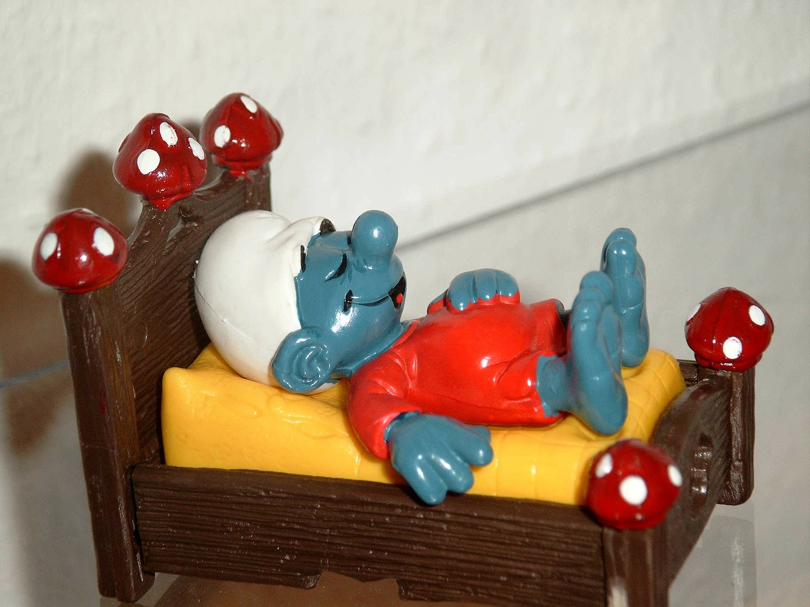

So, you want to know more about me? Okay, well you have to know my normal routine.
First I wake up. Its a bit of a struggle but the thought of making the most out of the day hits me pretty quick and then I am off to the races.
Before I really get started with my work I like to get a quick health breakfast. I personally like to have something to drink will I am working. Coffee is usually my choice in the morning.
It's go time! I like working bits of my personal projects everyday.
I usually take a little nap after 2 hours of work. It relax's my brain and enables me to think much better after.


I usually like test of firefox and safari, but I develop on chrome